Classification et régression#
Le site UCI propose de nombreux jeux de de données utilisés dans un but pédagogique. Parmi ceux-ci, on y trouve un jeu de données sur le vin, Wine Data Set. Pour ma part, j’ai goûté le vin assez tard, ne sachant véritablement l’apprécier qu’à la trentaine avérée. Je suis encore incapable de déchiffrer le vocabulaire qui sort de la bouche des experts pour me contenter d’un « j’aime » ou « j’aime pas » loin du caractère tanique ou parfumé du breuvage. Culture française oblige, ce jeu de données pourrait convertir les mesures issues d’une pipette, les composants chimiques du vin, en une note gustative. Ce jeu est intéressant car il montre que ce n’est pas si simple. J’aimerais pouvoir estimer la qualité d’un vin en fonction de sa composition chimique. Deux usages à cela, le premier pour choisir un vin sans avoir à le goûter, le second s’il me prend l’envie d’être viticulteur afin de pouvoir améliorer la qualité d’un vin en jouant sur ses composants.
Quelques lectures :
Ce jeu de données peut également être téléchargé avec la fonction
load_wines_dataset.
Découverte du machine learning#
Finalité#
On ne part pas de rien pour construire cette fonction, on dispose de plusieurs milliers de notes données par des experts à des milliers de vins dont on connaît les mêmes 12 informations sur leur composition, ci-dessous, pour deux vins.
index 0 1
0 fixed_acidity 7.4 7.8
1 volatile_acidity 0.7 0.88
2 citric_acid 0.0 0.0
3 residual_sugar 1.9 2.6
4 chlorides 0.076 0.098
5 free_sulfur_dioxide 11.0 25.0
6 total_sulfur_dioxide 34.0 67.0
7 density 0.9978 0.9968
8 pH 3.51 3.2
9 sulphates 0.56 0.68
10 alcohol 9.4 9.8
11 quality 5 5
12 color red red
On part du principe que si deux vins différents ont la même composition, leurs qualités gustatives seront identiques. 6000 vins c’est à la fois beaucoup et pas beaucoup. Si un vin inconnu a une composition identique à l’un des 6000 vins répertoriés, on peut supposer qu’il obtiendra la même note. Mais si sa composition est tout aussi nouvelle, que faire ?
Un des objectifs du machine learning est de proposer une façon de construire une note pour une composition nouvelle. On appelle cela faire une prédiction. On souhaite en quelque sorte étendre le savoir accumulé sur 6000 vins à de nouvelles compositions de vins. Si les vins n’avaient qu’un seul composant chimique, on obtiendrait le graphe suivant en positionnant chaque vin noté dans la base en fonction de sa composante et de sa note.
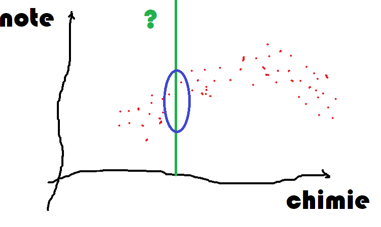{kind=link}
Le trait vert correspond à la concentration de ce composé pour un nouveau vin et elle est différente de toutes celles connues. On se doute que la qualité de ce nouveau vin sera dans le cercle bleu mais où ? C’est ce que nous allons voir.
Les données#
Le jeu de données peut être téléchargé depuis le site Wine Quality Data Set. Il peut être également obtenu avec le code suivant :
<<<
from teachpyx.datasets import load_wines_dataset
df = load_wines_dataset()
df = df[["fixed_acidity", "volatile_acidity", "citric_acid", "quality"]].copy()
df["..."] = "..."
print(df.head())
>>>
fixed_acidity volatile_acidity citric_acid quality ...
0 7.4 0.70 0.00 5 ...
1 7.8 0.88 0.00 5 ...
2 7.8 0.76 0.04 5 ...
3 11.2 0.28 0.56 6 ...
4 7.4 0.70 0.00 5 ...
(Source code, png, hires.png, pdf)
{kind=link}
{kind=link}
Il y a plus de 6000 vins répertoriés. Les très mauvais ou très bons vins sont peu nombreux, c’est-à-dire que les notes sont distribuées de façon non uniforme. Cela aura son importance plus tard. Toutefois, si la prédiction dépend des observations passées, il est probable que le modèle soit plus à l’aise là où il a le plus d’information. Les vins extrêmes, peu représentés, seront sans doute moins bien appréhendés par le modèle de prédiction.
Les plus proches voisins#
Le modèle de prédiction le plus intuitif consiste à chercher pour
chaque nouveau vin le vin qui lui ressemble le plus parmi tous ceux connus.
On appelle cette méthode la méthode des
plus proches voisins.
Le module scikit-learn implémente cet algorithme
Nearest Neighbors et
on pourra s’inspirer de l’exemple
Nearest Neighbors regression.
De façon un peu plus mathématique, on considère les données d’apprentissage
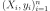, le modèle construit une prédiction pour un  donné à partir de
donné à partir de  plus proches voisins. Ceux-ci vérifie :
plus proches voisins. Ceux-ci vérifie :
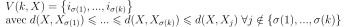
La prédiction est une moyenne des valeurs connues associées aux voisins trouvés :
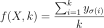
Il s’agit maintenant d’appliquer cet algorithme afin de prédire la note d’un vin pour trois vins représentés par les trois points d’interrogations qui suivent.
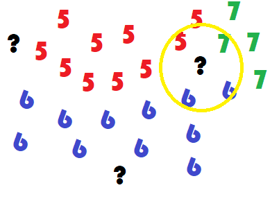{kind=link}
Cette représentation simplifiée montre deux vins plutôt simples à classer et un dernier - cercle jaune - dont les voisins sont en désaccord quant à la décision à prendre. Le vrai visage du jeu de données est plus difficile à lire. Il est obtenu grâce à une analyse en composante principale (ACP) qui projette un ensemble de points dans un espace de dimension réduite en maximisant la variance de l’ensemble projeté.
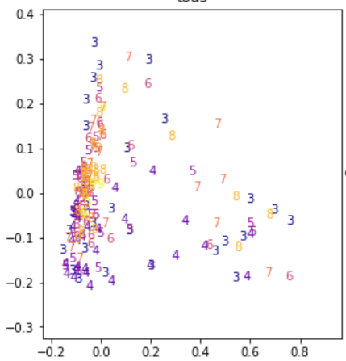{kind=link}
Peut-être que la prédiction sera facile mais ce n’est pas cette représentation qui permet de nous en assurer.
Les plus proches voisins est un des modèles les plus simples avec le modèle linéaire, il est néanmoins très coûteux à calculer puisqu’il faut a priori s’enquérir de toutes les distances entre un nouveau point et ceux déjà connus. Des algorithmes permettent d’accélérer la recherche de voisins comme les ball tree. Ils sont de moins en moins efficaces au fur et à mesure que la dimension de l’espace des features augmente (voir Plus proches voisins en grande dimension).
Trois étapes récurrentes#
Train / test#
Il n’est pas facile d’avoir une idée la pertinence d’un modèle de prédiction. Le plus simple est de comparer les prédictions obtenus avec la valeur de l’expert. Comme le modèle des plus proches voisins retourne toujours la bonne prédiction s’il a déjà vu un vin, il faut nécessairement pouvoir lui en proposer de nouveau.
La base de données représente l’ensemble des données à disposition. Il est impossible d’en amener de nouvelles pour le moment. Il faudra s’en contenter. On découpe alors les données en deux ensembles, un pour apprendre, un pour tester. On les appelle les bases d’apprentissage et de test. On compare les prédictions aux valeurs attendues sur la base de test.
Validation croisée#
Il est acquis qu’un modèle doit être évalué sur une base de test différente
de celle utilisée pour l’apprentissage. Il suffit de penser aux plus proches
voisins dont le nombre d’erreurs sur la base d’apprentissage est toujours nul.
Mais la performance sur la base de test est peut-être
juste l’effet d’une aubaine et d’un découpage particulièrement avantageux.
Pour être sûr que le modèle est robuste, on recommence plusieurs fois. On appelle
cela la validation croisée ou
cross validation
en anglais. La base de données en découpée en  segments,
5 le plus souvent, 4 segments servent à apprendre, le dernier
à tester. On permute 5 fois et cela donne cinq scores.
segments,
5 le plus souvent, 4 segments servent à apprendre, le dernier
à tester. On permute 5 fois et cela donne cinq scores.
{kind=link}
Hyper-paramètres#
Un modèle de machine learning est appris avec un algorithme d’optimisation. Celui dépend de plusieurs paramètres, le nombre de voisins dans le cas des plus proches voisins, le pas de gradient pour un algorithme de descente de gradient. Il est illusoire de penser que les mêmes paramètres donnent les meilleurs résultats quelque soit le jeu de données considéré. Mais alors, quels paramètres donnent les meilleurs résultats ? La plus simple stratégie est d’essayer plusieurs valeurs et de choisir la meilleure.
Deux problèmes à la base de beaucoup d’autres#
Régression#
Le bruit blanc est une variable aléatoire couramment utilisé pour désigner le hasard ou la part qui ne peut être modélisée dans une régression ou tout autre problème d’apprentissage. On suppose parfois que ce bruit suive une loi normale.
Définition D1 : bruit blanc
Une suite de variables aléatoires réelles
 est un bruit blanc :
est un bruit blanc :
 ,
, 

La prédiction de la note des vins est un problème de régression et cela consiste à résoudre le problème suivant :
Problème P1 : Régression
Soient deux variables aléatoires  et
et  ,
l’objectif est d’approximer la fonction
,
l’objectif est d’approximer la fonction
 .
Les données du problème sont
un échantillon de points
.
Les données du problème sont
un échantillon de points  et un modèle paramétré avec
et un modèle paramétré avec  :
:

avec  ,
,
 bruit blanc,
bruit blanc,
 est une fonction de paramètre .
est une fonction de paramètre .
La fonction peut être une fonction linéaire,
un polynôme, un réseau de neurones…
Lorsque le bruit blanc est normal, la théorie de l’estimateur
de vraisemblance (voir [Saporta2006]) permet d’affirmer
que le meilleur paramètre  minimisant l’erreur de prédiction est :
minimisant l’erreur de prédiction est :
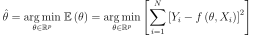
Le lien entre les variables et dépend des hypothèses faites
sur . Généralement, cette fonction n’est supposée non linéaire
que lorsqu’une régression linéaire
donne de mauvais résultats.
scikit-learn implémente de nombreux modèles de
régression (voir Supervised learning).
Classification#
Le notebook sur l’ACP a mis en lumière que les vins blancs et rouges pourraient être différents chimiquement et il devrait être possible de prédire la couleur en fonction des données disponibles dans ce jeu de données. Ce problème n’est pas une régression puisque la cible à prédire n’est pas une quantité mais une information booléenne ou binaire : blanc ou rouge. La frontière dans les deux couleurs se dessine dans l’image ci-dessous mais comment déterminer cette frontière ?
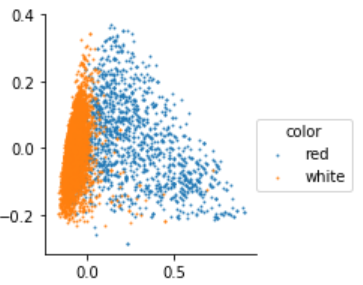{kind=link}
La modélisation de ce problème commence par construire deux probabilités
pour un vin définies par  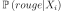 et 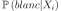 qu’on prononce
comme étant la probabilité que la couleur du vin soit rouge ou blanche
connaissant . Comme il n’y a que deux possibilités et qu’un vin
ne peut être des deux couleurs à la fois :
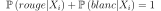. La frontière est l’ensemble
des points pour lesquelles ces probabilités sont égales,
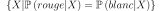, ou encore :
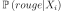 et 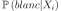 qu’on prononce
comme étant la probabilité que la couleur du vin soit rouge ou blanche
connaissant . Comme il n’y a que deux possibilités et qu’un vin
ne peut être des deux couleurs à la fois :
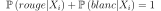. La frontière est l’ensemble
des points pour lesquelles ces probabilités sont égales,
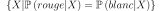, ou encore :
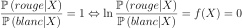
Il reste à expliciter la fonction f. On remarque que si f est linéaire, la séparation entre les deux classes sera une droite. On va voir comment relier cela à la probabilité d’appartenance à une classe.
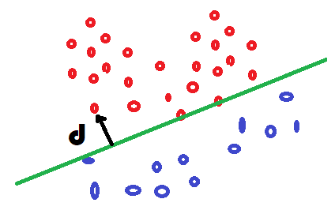{kind=link}
La régression logisitique relie cette probabilité à la distance 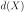 à la frontière entre les deux classes via une loi logistique, presqu’une distance dans la mesure où la fonction 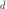 est positive d’un côté et négative de l’autre.
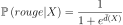
On vérifie que lorsque la distance est nulle, la probabilité vaut 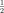 et que 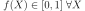. On écrit la fonction f :
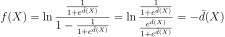
La régression logistique suppose que la fontière est une droite.
Dans ce cas, la distance à une droite
s’écrit 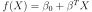 si 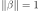.
Maintenant que les probabilités sont définies, on peut écrire la
log-vraisemblance du problème (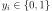).
On suppose tous les points équiprobable.
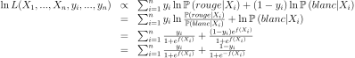
La quantité suivante correspond à la
distance de Kullbak-Leiber
entre deux distributions discrètes  et la prédiction du modèle
et la prédiction du modèle  .
.
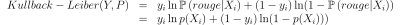
Les deux problèmes, classification et régression, sont sont similaires. Seule la fonction de coût change : cette fonction évalue quantitativement la distance entre la prédiction du modèle et la réponse attendue. La régression précédente utilise une fonction de coût quadratique, la classification utilise une fonction log-loss. Pour résumer :
Problème P2 : Classification binaire
Soient deux variables aléatoires et  ,
l’objectif est d’approximer la fonction
.
Les données du problème sont
un échantillon de points
et un modèle paramétré avec :
,
l’objectif est d’approximer la fonction
.
Les données du problème sont
un échantillon de points
et un modèle paramétré avec :

avec ,
une variable aléatoire,
est une fonction de paramètre .
Les modèles linéaires sont simples, robustes, interprétables. Un modèle plus compliqué améliore souvent les performances. Il est possible aussi d’ajouter des variables construites de façon non linéaire à partir des premières. Le procédé est plus ou moins automatique mais donne parfois de bons résultats : Features ou modèle.
Classification multi-classe#
La régression nous a permis de prédire une note. La cible à prévoir est un peu particulière dans ce problème puisque la note est entière et prend peu de valeurs distinctes. Chaque vin peut être considéré comme faisant partie du groupe associé à tous les vins portant la même note. Ce problème est différent du précédent car il y a plus de deux classes. Certains modèles sont estimées de la même façon que s’il s’agissait de deux classes comme les réseaux de neurones. D’autres converstissent d’abord le problème en une succession de problème de classification binaires avant de fusionner leurs réponses. Il existe deux stratégies : OneVsRest, OneVsOne.
La première stratégie consiste à apprendre K classifieurs
pour K classes. Chaque classe apprend une classe contre toutes
les autres. Supposons qu’on dispose des données  avec 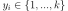. Le classifieur binaire 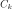
est appris avec les données 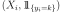.
L’observation est affectée à la classe qui maximise
le score de classification :
avec 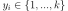. Le classifieur binaire 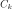
est appris avec les données 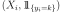.
L’observation est affectée à la classe qui maximise
le score de classification :
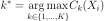
L’autre approche convertit le problème initiale en 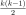 classifications binaires. Une classifieur est appris pour chaque paire de classes. Cette stratégie n’est pas nécessairement plus longue lors de l’apprentissage, mais elle l’est certainement lors de la prédiction. La classe prédite est celle qui a remporté le plus de match en un contre un.
Paradoxalement, cette stratégie est préférable lorsque le nombre de classes est grand car les jeux de données ne sont pas déséquilibrés lors de l’apprentissage (voir [Furnkranz2002]).
Ces approches ont néanmoins un léger inconvénient qui est d’avoir plusieurs classifieurs dont les scores ne sont pas nécessairement comparables : le premier classifieur peut classer un élément dans la classe 1 avec une probabilité de 0.60 et le second dans la classe 2 avec une probabilité de 0.59. Ces probabilités ne sont pas nécessairement comparables mais surtout comme elles sont très proches, il est raisonnable de penser que, si chaque classifieur est pertinent, l’ensemble est plutôt hésitant. On peut améliorer les performances avec une méthode de Stacked generalization et des modèles qui supportent nativement la multi-classification.
Machine learning et programmation#
L”API de scikit-learn se résume à peu de choses et permet déjà de faire des choses assez puissantes. On peut par exemple faire de l’optimisation d’hyperparamètres sur des assemblages de transform, learner. On appelle un tel assemblage un pipeline. Le résultat se comporte comme un modèle ou learner, il implémente les mêmes fonctions.
<<<
from sklearn import svm
from sklearn.datasets import make_classification
from sklearn.feature_selection import SelectKBest
from sklearn.feature_selection import f_regression
from sklearn.pipeline import Pipeline
X, y = make_classification(n_informative=5, n_redundant=0, random_state=42)
anova_filter = SelectKBest(f_regression, k=5)
clf = svm.SVC(kernel="linear")
anova_svm = Pipeline([("anova", anova_filter), ("svc", clf)])
anova_svm.fit(X, y)
print(anova_svm)
>>>
Pipeline(steps=[('anova',
SelectKBest(k=5,
score_func=<function f_regression at 0x7fe4197732e0>)),
('svc', SVC(kernel='linear'))])
Lorsqu’on répète souvent le même traitement, on a tout intérêt à implémenter celui-ci sous la forme d’un transformer ou d’un estimator. Une fois ceci fait, il devient facile de répéter le même traitement dans beaucoup de pipeline. Il faut bien sûr implémenter les méthodes fit, predict, predict_proba, transform. Mais il faut vérifier voire implémenter aussi les méthodes get_params et set_params qui permettent aux fonctions de scikit-learn de cloner un modèle.
Exercices#
Bibliographie#
Probabilités, analyse des données et statistique, Gilbert Saporta, Editions Technip
Round Robin Classification, Johannes Fürnkranz